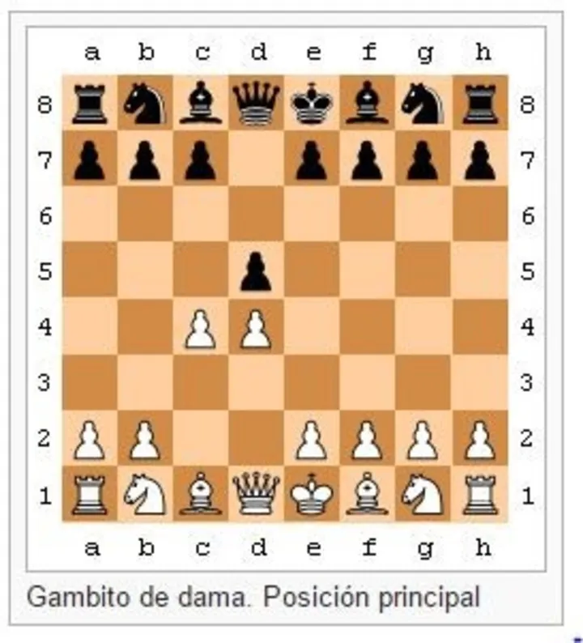

O Gambito da Rainha é uma das aberturas mais antigas, respeitadas e populares do xadrez, iniciando-se com os lances 1.d4 d5 2.c4. Diferente de aberturas focadas em ataques táticos imediatos, esta opção busca estabelecer um domínio estratégico sobre o centro do tabuleiro desde o primeiro momento. As brancas oferecem temporariamente o peão da ala da dama para desviar o peão central das pretas da casa d5, permitindo que o peão de e2 avance posteriormente para e4 e garanta o controle do espaço central. Apesar do nome, o Gambito da Rainha não é um gambito verdadeiro no sentido estrito da palavra, pois as pretas não conseguem manter a vantagem do peão extra sem comprometer gravemente a sua posição. Se as pretas capturarem o peão com 2...dxc4, no chamado Gambito da Rainha Aceito, as brancas recuperam o peão com facilidade enquanto desenvolvem suas peças rapidamente. Por esse motivo, a resposta mais comum em partidas de alto nível é o Gambito da Rainha Recusado, onde as pretas sustentam o peão de d5 jogando 2...e6 ou 2...c6, mantendo uma sólida fortaleza central. Sua história confunde-se com a própria evolução do xadrez moderno, tendo sido mencionada no Manuscrito de Göttingen no século XV e amplamente estudada ao longo dos séculos. A abertura ganhou enorme força no final do século XIX e início do século XX, tornando-se o pilar fundamental do confronto pelo campeonato mundial de 1927 entre José Raúl Capablanca e Alexander Alekhine. Grandes mestres e campeões mundiais como Garry Kasparov, Anatoly Karpov e Magnus Carlsen utilizaram a estrutura como uma de suas principais armas. A profundidade estratégica do Gambito da Rainha reside nas ricas batalhas posicionais que ele proporciona. As brancas geralmente buscam pressionar a ala da dama, criar um peão isolado no adversário ou preparar um ataque gradual no centro. Em contrapartida, as pretas lutam para libertar suas peças, especialmente o bispo de casas claras, e contra-atacar no momento certo. Por equilibrar solidez defensiva e chances reais de vitória, a abertura segue como um elemento essencial no repertório de enxadristas de todos os níveis.